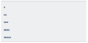

1. Дан массив
let a = [
[{name: 'Mary', age: 23}, {name: 'Mike', age: 45}, {name: 'Nick', age: 11}],
[{name: 'Adam', age: 56}, {name: 'Sara', age: 21}, {name: 'Don', age: 22}],
[{name: 'Karl', age: 34}, {name: 'Marta', age: 76}, {name: 'John', age: 19}]
];
Скопируйте его в переменную b и выведите в консоль.
2. С этого урока начинаем работать с функционалом интернет-магазина.
Предположим, есть сущность корзины. Нужно реализовать функционал
подсчета стоимости корзины в зависимости от находящихся в ней товаров.
Товары в корзине хранятся в массиве.
Задачи:
a. Организовать такой массив для хранения товаров в корзине;
b. Организовать функцию countBasketPrice, которая будет считать
стоимость корзины.
3. * Вывести с помощью цикла for числа от 0 до 9, не используя тело цикла. Выглядеть
должно так:
for(…){// здесь пусто}
4. * Нарисовать пирамиду из 20 рядов с помощью console.log, как показано на рисунке:
 Проверить Открыть исходный код